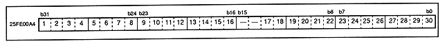

Figure 3.22 Interrupt status register (register: IST) Initial value 00000000H

These status registers are all readable / writable registers, and have the meanings shown in Table 3.8 when reading and writing.